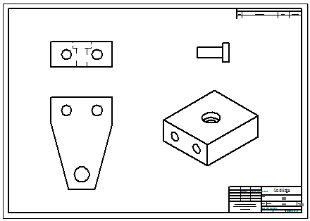

Create assembly part views with the View Wizard
You can use the View Wizard to create a primary drawing view of an assembly, and to add assembly part views that document individual components, parts, and subassemblies in the assembly. You then can add a parts list for the top level assembly, as well as matching item balloons on the assembly part views.
-
Place the primary drawing view of the assembly model on the active sheet:
-
Choose Home tab→Drawing Views group→View Wizard
 .
. -
In the Select Model dialog box, select an assembly document.
-
Click to place a drawing view with an isometric orientation of the assembly model on the sheet.
-
Right-click to end the command.
-
-
Choose Home tab→Tables group→Parts List
 , select the assembly drawing view, and click to place the auto-ballooned parts list.
, select the assembly drawing view, and click to place the auto-ballooned parts list. Tip:
Tip:The default parts list is a top-level list. You may need to place a more granular list to ensure that you can select and place assembly part views of all of the components in the model. You can do this by selecting the option, Atomic list (all parts), on the List Control tab in the Parts List Properties dialog box before you click to place the parts list.
-
In the sheet tab tray, click Insert Working Sheet.

-
Place one or more drawing views of the parts in the assembly on the new sheet by doing all of the following:
-
Select the View Wizard command again.
-
In the Select Attachment dialog box:
-
Verify that the Create drawing view independent of assembly check box is cleared.
-
Select one or more components, parts, or subassemblies.
-
As you click a model in the list of parts, it is displayed in the Preview pane, and all instances of it are highlighted in existing drawing views.
-
You can use the following keyboard combinations to view and select multiple parts in the list:
Use these keys
To
Double-click
Expand an assembly.
Shift+double-click
Expand all assemblies within a node in the parts list structure.
Shift+click
Select additional items.
Ctrl+click
Select and deselect items.
-
-
Click OK to close the dialog box and continue.
-
-
On the command bar, adjust the view scale and choose the orientation you want.
-
Click to place the assembly part view on the sheet.
-
Repeat the above steps for each assembly part view that you want to place.
Example:Four assembly part views were added to this sheet.

-
-
Add item balloons to the assembly part views:
-
Choose Home tab→Annotation group→Balloon .
-
On the Balloon command bar, set all of the following:
-
Link to Parts List
-
Item Number
-
Item Count
-
-
Click an element in a part view, and then click to place the balloon.
Repeat for each assembly part view.
Example:The item balloons on the assembly part views are the same as those in the parts list for the full assembly.

-
-
To specify that features that are added to or removed from the assembly model are always updated in an assembly part view, on the Model Options tab in the Drawing View Properties dialog box, select the Show new components added to assemblies in drawing views check box.
-
The Filter drawing view display list to display only shown components option on the Display tab makes it easier to specify the show and hide status of a long list of parts, components, and subassemblies in an assembly part view.
-
You can add a caption that displays the unique filename of an assembly part view using the Caption tab in the Drawing View Properties dialog box. Click the Property Text button, and then in the Select Property Text dialog box, do the following:
-
In the Parts pane, click the name of the part, component, or subassembly.
-
From the property text Source list, select Named Reference.
-
From the Properties list, select File Name (no extension).
-
Click Select and then OK to add the property text string to the Caption tab.
-
Click Apply to display the caption on the drawing view.
-
How do I
Create a simplified assembly drawing view and parts listCreate an alternate position assembly drawing view
Make a part a reference part
Display construction and reference geometry in a drawing view
Learn more
Assembly drawingsReference parts
Look up more details
Select Attachment dialog boxSet Primary and Alternate Positions dialog box